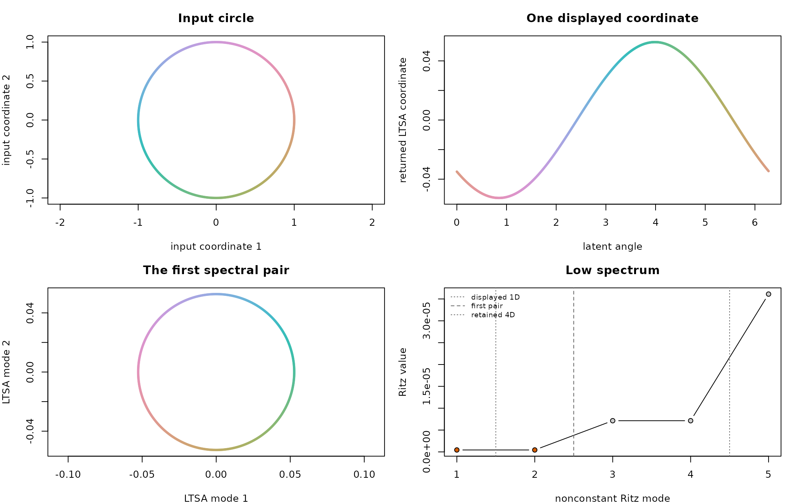
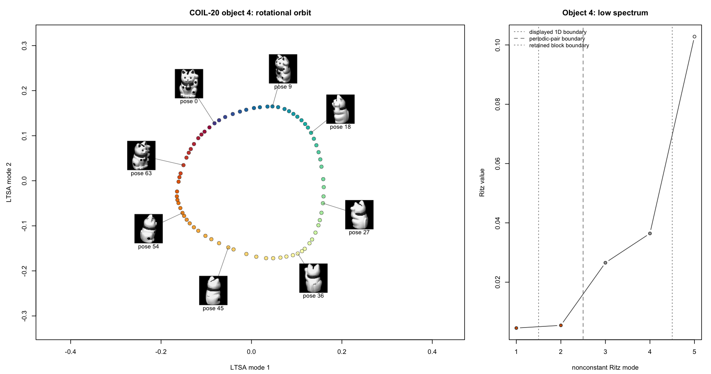
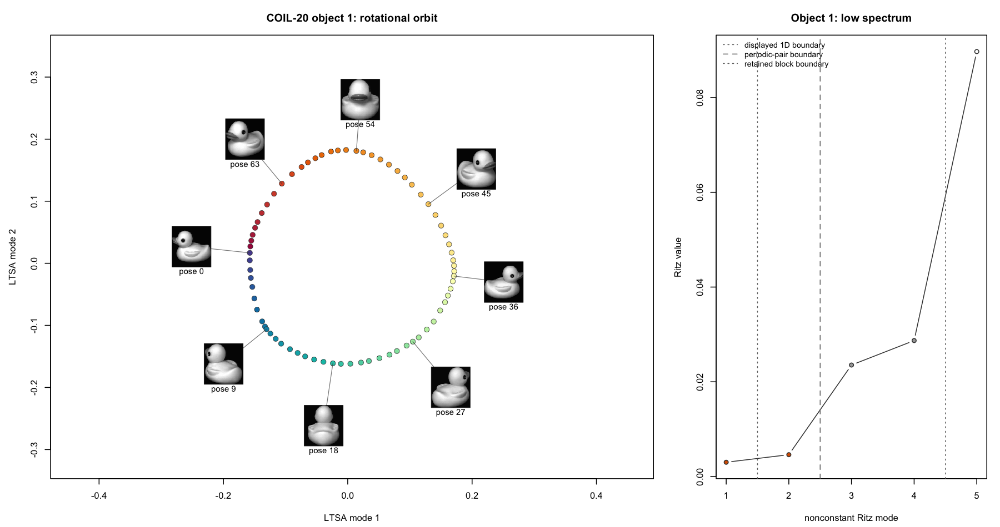
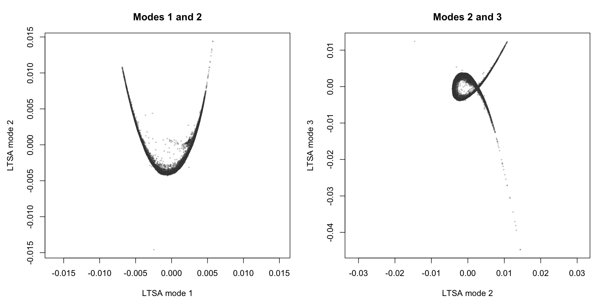
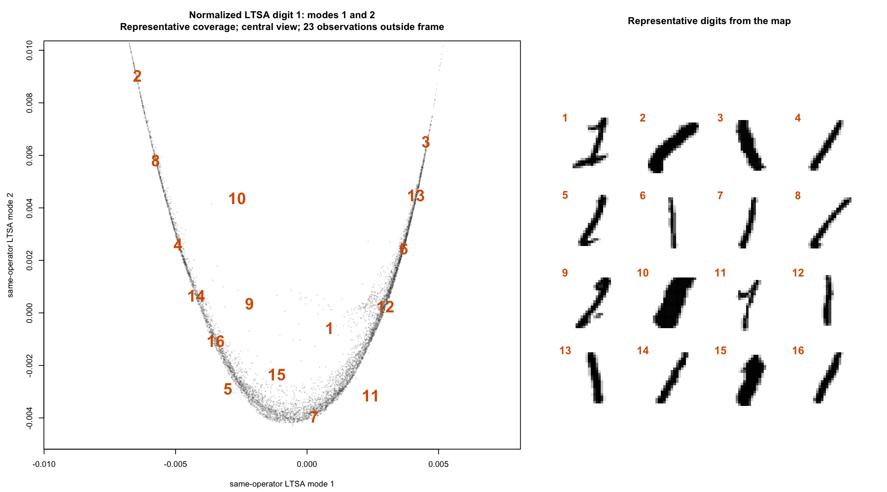
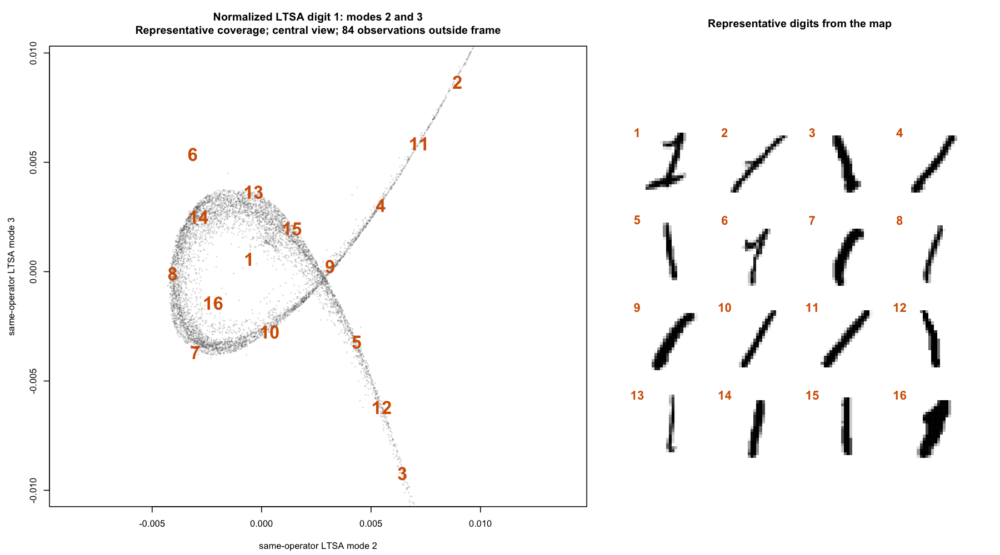
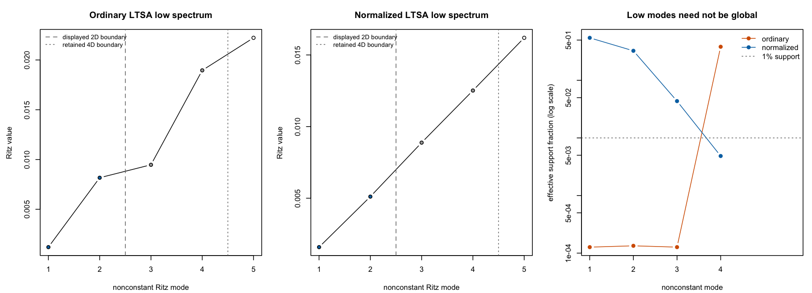
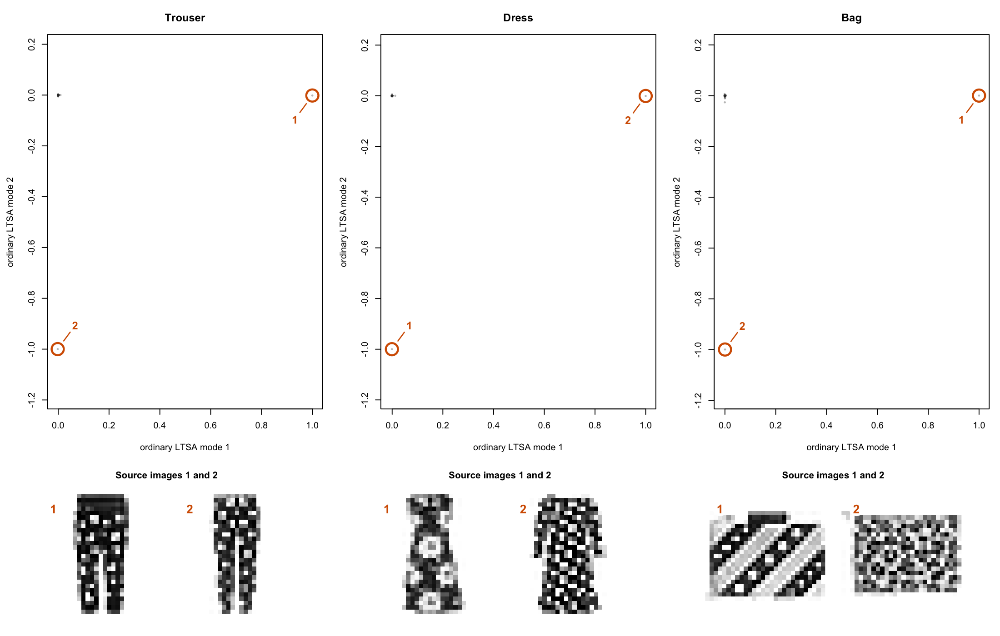
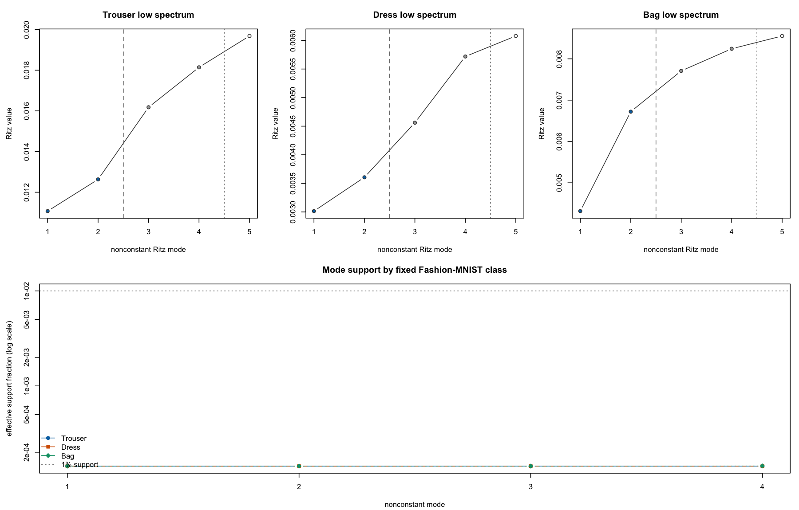

LTSA uses ndim twice: once to build the local tangent
spaces and again to choose how many global coordinates to return. Those
choices can differ. A circle is locally one-dimensional, for example,
but two coordinates show its closed path.
spectral_dim retains extra coordinates from the same
LTSA operator. This article shows how to inspect them on a circle,
COIL-20, MNIST, and Fashion-MNIST.
Click any figure to open a larger version; click the enlarged image or press Escape to close it. Keyboard users can focus a figure and press Enter or Space.
Keep More Modes from the Same Operator
Given a data matrix X, request four low-frequency modes
while keeping a two-dimensional local tangent model and a two-coordinate
returned embedding:
fit <- flotsam::ltsa(
X,
ndim = 2,
n_neighbors = 15,
output = "result",
spectral_dim = 4
)
dim(fit$embedding) # n by 2
dim(fit$spectral_embedding) # n by 4
identical(
fit$embedding,
fit$spectral_embedding[, 1:2, drop = FALSE]
)| Control | Changes B? |
Purpose |
|---|---|---|
ndim |
yes | Sets the local tangent rank and displayed prefix |
spectral_dim |
no | Retains extra nonconstant modes from the fixed operator |
eig_k |
no | Gives the eigensolver a numerical candidate span |
Most users can leave eig_k at its default. When
retaining an expanded block, a manual request must be at least
spectral_dim + 2: one place for the known constant
direction and another for the mode just beyond the retained block.
The displayed and retained boundaries have separate diagnostics:
fit$eigen$diagnostics$scaled_boundary_gap
fit$eigen$spectral$diagnostics$scaled_boundary_gap
fit$eigen$status
fit$eigen$spectral$statusA boundary gap compares the last included mode with the next one. A large gap isolates the chosen subspace. A small gap suggests interpreting the neighboring modes together and checking their geometry and support.
A Circle Needs a Spectral Pair
A circle has a one-dimensional tangent at every point. A single real-valued coordinate cannot follow the whole loop continuously, so the first two low-frequency modes work as a pair. Their signs and orientation can change between fits; treat the two-dimensional span as the stable unit.
The example uses exact neighbors and dense eigenanalysis, making the repeated pairs easy to see.
library(flotsam)
theta <- seq(0, 2 * pi, length.out = 721)[-721]
circle <- cbind(x = cos(theta), y = sin(theta))
circle_fit <- ltsa(
circle,
ndim = 1,
n_neighbors = 9,
nn_method = "exact",
eig_method = "eig",
eig_k = 8,
output = "result",
spectral_dim = 4
)
circle_fit$eigen$values
#> [1] 4.464673e-07
circle_fit$eigen$spectral$values
#> [1] 4.464673e-07 4.464673e-07 7.139639e-06 7.139639e-06
circle_fit$eigen$status
#> [1] "warning"
circle_fit$eigen$messages
#> [1] "Weak Ritz boundary gap after the selected block: 2.635e-18 < 1e-04."
The input circle, its one-dimensional LTSA display, the first two modes from the same operator, and the low spectrum. The mode pair follows the complete periodic progression.
Setting ndim = 2 would build a two-dimensional local
tangent model. This fit instead keeps ndim = 1 and uses
spectral_dim = 4: the first two retained modes reveal the
global coordinate pair, while the next two expose its neighboring
spectral context.
COIL-20: A Real Periodic Example
COIL-20 contains 72 views of each object as it rotates. One object traces a closed, locally one-dimensional curve through pixel space, so the circle example predicts a spectral pair.
At k = 7, mixing objects produces a disconnected
neighbor graph, so we fit objects separately. Objects 4 and 1 were
selected before embedding using a screen for connected graphs and good
coverage of the pose sequence. Each fit uses standard LTSA with
ndim = 1, exact neighbors, and four retained modes. The
coordinates come from pixels; pose supplies the point colors and
thumbnail labels.


For objects 4 and 1, the gap after mode 2 is about 23 and 12 times larger, respectively, than the gap between modes 1 and 2. This is the spectral pattern expected from a mode pair. The second mode completes the rotational orbit already present in the fixed operator.
Check Whether a Mode Represents Many Observations
A low-energy mode can be dominated by a few observations. For a
Euclidean-normalized coordinate vector v, the effective
support fraction is
\frac{1}{n\sum_i v_i^4}.
This is the normalized participation ratio. It equals 1/n when one observation carries the mode,
r/n when the energy is spread equally
across exactly r observations, and 1
when it is spread equally across all observations. Here, a mode’s energy
means its squared coordinate values, v^2:
This scalar shows whether a coordinate is carried by many observations or only a few. The plots then reveal the variation organized by a broadly supported coordinate.
For a block of linearly independent coordinates, first orthonormalize
its columns. Each observation’s block leverage is the
sum of its squared entries across that basis. Divide those leverages by
their sum to get influence fractions p, then compute
1 / (n * sum(p^2)):
block_support_fraction <- function(V) {
Q <- qr.Q(qr(V))
p <- rowSums(Q^2) / ncol(Q)
1 / (nrow(Q) * sum(p^2))
}This block support is unchanged by rotating or rescaling coordinates within the span. It does not establish where the span should end, so read it together with the boundary gap.
MNIST: Inspect a Neighboring Pair
The 7,877 MNIST digit-1 images illustrate what an extra coordinate
can add to an existing display. Here we use Jacobi-normalized LTSA, with
ndim = 2, k = 15, and four retained modes. The
question is what to show from that fixed operator. The normalization article examines the
separate decision to change the estimator.
The first pair forms a curved band; replacing mode 1 with mode 3 gives a loop with two branches. These plots show the full coordinate ranges, including the more distant points. Each panel has its own axes, with equal physical units on both axes.

The first pair arranges handwriting by slant, curvature, stroke
width, hooks, and serifed or branched forms. Its block support is
0.480, with a mode 2–3 boundary gap of
0.00201. To see the handwriting behind the shapes, expand
the central views. Numbered thumbnails are chosen to cover that region;
the plot titles report how many observations fall outside each
frame.
MNIST: Modes 1 and 2 with Image Thumbnails

MNIST: Modes 2 and 3 with Image Thumbnails

Mode 3 is less broadly supported than modes 1 and 2. Across all four
retained modes, block support falls to 0.0497, with a mode
4–5 gap of 0.00196. The additional coordinates therefore
deserve more care than the first pair. Keeping them makes the
complementary view available; it does not mean all four coordinates are
equally useful.

Fashion-MNIST: Extra Modes Can Stay Concentrated
Trousers, dresses, and bags provide a different reason to inspect a
block: we want to know whether concentration is confined to the first
two modes. Each class contains 7,000 images and uses one fixed
approximate-neighbor graph. We fit standard LTSA with
ndim = 2, k = 15, and twelve retained
modes.
In all three first-pair displays, block support is close to the
two-point benchmark 2 / 7000. The largest 1% of
observations carry more than 99.98% of the displayed span’s
leverage.

The source images identify those extreme points as atypical striped or noisy records. They set the visible scale, while most garments are compressed together. The graphs are connected, the local patches have full rank, and the eigensolves converge, so we also inspect the extra modes.

All 36 coordinates across the three classes remain near the
single-point support limit, 1 / 7000. The twelve-coordinate
block supports are also close to the corresponding
12 / 7000 benchmark.
For these fits, looking farther into the computed block does not reveal a broadly supported coordinate. The mode 12–13 gaps are weak, so this conclusion stops at the twelve modes inspected. To investigate changing the weighting of the estimator itself, see Jacobi-Normalized LTSA.
What to Carry into Practice
Use spectral_dim when topology or a weak boundary gives
you a reason to look beyond the displayed coordinates. On the circle and
COIL-20, a pair of modes completes a closed path. MNIST supplies a
useful neighboring view, with less support in the added coordinate.
Fashion-MNIST shows that a larger computed block can remain concentrated
throughout.
Read the plots together with support and boundary gaps, after checking graph, rank, and solver diagnostics. Diagnosing suspicious LTSA results gives the returned fields and the action associated with each signal.
Retaining a block supplies candidate coordinates; choosing which
coordinates to display is a separate problem. Independent
Eigencoordinate Selection is one published method for selecting
smooth, locally independent coordinates from a larger spectral set.
spectral_dim does not perform that selection; it exposes
the candidate modes needed to investigate it.
Trying It Yourself
Here’s a compact version of the COIL-20 example. Install
flotsam, snedata, vizier 0.6.2 or
later, and ggplot2:
install.packages("pak")
pak::pak(c(
"jlmelville/flotsam", "jlmelville/snedata", "jlmelville/vizier", "ggplot2"
))Download object 4 and retain four coordinates from the one-dimensional local model. The pose values are used only to color the plot.
coil <- snedata::download_coil20(as = "list")
rows <- coil$meta$object == 4L
X <- coil$data[rows, , drop = FALSE]
pose <- as.integer(as.character(coil$meta$pose[rows]))
fit <- flotsam::ltsa(
X, ndim = 1, n_neighbors = 7, nn_method = "exact", eig_method = "eig",
eig_k = 8, output = "result", spectral_dim = 4
)
vizier::embed_ggplot(
fit$spectral_embedding[, 1:2], pose,
color_scheme = grDevices::hcl.colors(256, "Dynamic"), num_colors = 256,
fixed_aspect = TRUE, title = "COIL-20 object 4: modes 1 and 2"
)Try fit$spectral_embedding[, 2:3] to inspect the next
pair. The article figures add thumbnails of the object; this example
plots the coordinates and pose colors.
Data Sources
The image examples use COIL-20 (Sameer A. Nene, Shree K. Nayar, and Hiroshi Murase), MNIST (Yann LeCun, Corinna Cortes, and Christopher J. C. Burges), and Fashion-MNIST (Han Xiao, Kashif Rasul, and Roland Vollgraf).